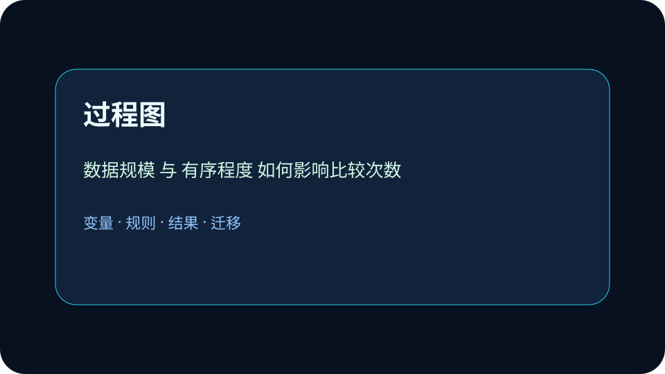

为什么给数据排个序，查找速度可能从一个个翻变成不断对半砍？
选择后，AI 学伴会围绕你的卡点给提示。
❓ 为什么冒泡排序这么慢还有人用？
❓ 二分查找必须要求数据有序吗？
❓ 考试会考手写排序代码吗？
学完这一课，这些问题你都能自信地回答。
已经知道：学生已掌握Python列表的基本操作（如append/index），体验过Excel的升序排序功能，并在手机通讯录中通过首字母快速定位联系人
但问题是：但面对10万条数据时，线性查找效率极低；不理解为何二分查找要求数据有序，常混淆插入排序与选择排序的交换机制
所以学：图书馆要在几千本书中快速找书。无序书架只能逐本找，有序书架可以按编号二分定位。
二分查找能成立的关键前提是什么？
线性查找像逐页翻书，二分查找像查字典。 请把本课方法迁移到一个新的校园场景：选课、借书、门禁或成绩查询。你的方案至少写出三个部分：数据从哪里来，规则如何处理，结果怎样被检查。如果发现结果异常，要能回到变量和规则重新诊断。
用Python实现并比较冒泡/快速/归并排序在1000条数据下的表现
规范定义：排序是指按规则重排数据；查找是指在数据集合中定位目标元素。
机制解释：排序建立次序，查找利用次序。线性查找逐个比较，二分查找每轮排除一半范围。
示例：在有序数组[10,20,30,40,50]中二分查找30。第一步取中点30，匹配成功；若查找35，则第一次比较后排除左半区，第二次比较40后排除右半区，确认不存在。整个过程仅需1-2次比较，时间复杂度O(log n)。

观察冒泡排序中相邻元素比较交换的过程，理解多轮扫描如何使大数逐渐沉底
分析二分查找的区间收缩机制：每次取中点比较后如何排除一半无效数据
对比插入排序与选择排序的移动次数差异，理解前者更适合近似有序数据集
将排序稳定性概念迁移到学生成绩表场景，说明相同分数时保持原始顺序的重要性
比较 32 个有序编号中线性查找和二分查找的最多比较次数。
提交后会检查是否包含变量、规则和结果。
真实算法曲线：冒泡排序比较次数随 n² 爆炸，快排约 n·log n；查找目标时顺序查找要 n 次，二分只要 log₂n 次。
💡 探究任务：把 n 从 10 拉到 100，读出四种算法的操作次数差距，解释为什么大数据系统必须先建索引。
以下哪种场景最能体现快速排序的优势？
先独立作答，再点选项查看对错与错因。
图书馆首先要对ISBN号排序，哪种算法最适合初始无序且无重复ISBN的情况？
对已排序的ISBN号，学生最常查询的20%热门书籍应如何优化？
在10万条已排序记录中查找某ISBN，二分查找最多需要多少次比较？
对基本有序的ISBN号进行微调时，____排序算法效率最高（时间复杂度O(n)）
答案：插入
插入排序对近乎有序数据效率最高
二分查找必须保证数据____，这是由其分治策略决定的
答案：有序
无序时无法确定搜索方向
在10000条已排序的学生记录中快速查找某学号，最合理的策略是？
在无序数据上直接用二分查找，前提错了，结果再快也不可靠。
只看表面语法，没检查前提和数据流。
先问变量是什么，再问规则是否成立。
✅ 对比冒泡O(n²)和快排O(nlogn)的曲线图
💡 忽视算法效率的数学本质
✅ 用[low,high)区间统一写法
💡 开闭区间概念混淆
线性查找像逐页翻书，二分查找像查字典：先翻中间，再决定去前半还是后半。
视频回顾本课主线：真实场景、概念定义、变量模型、迁移应用。
列举三种时间复杂度为O(n²)的排序算法名称
分析对100个近似有序的体温数据使用插入排序的优势
设计用归并排序合并两个独立班级成绩表时保持稳定性的具体步骤